Ultimate Spider-Man and X-Men (2005 - 2009)
| Comic Book | Release Date | Cover |
|---|---|---|
| Ultimate Spider-Man and X-Men #41 | 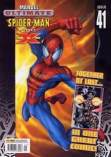 | |
| Ultimate Spider-Man and X-Men #42 | 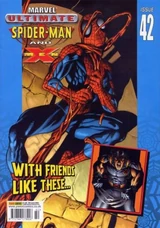 | |
| Ultimate Spider-Man and X-Men #43 | 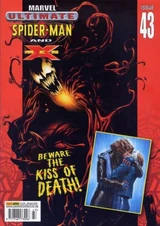 | |
| Ultimate Spider-Man and X-Men #44 | 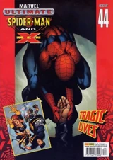 | |
| Ultimate Spider-Man and X-Men #45 | 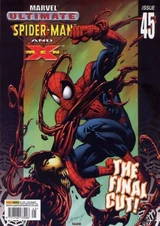 | |
| Ultimate Spider-Man and X-Men #46 | 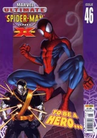 | |
| Ultimate Spider-Man and X-Men #47 | 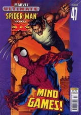 | |
| Ultimate Spider-Man and X-Men #48 | 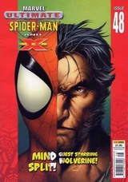 | |
| Ultimate Spider-Man and X-Men #49 | 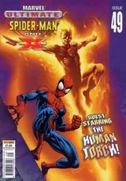 | |
| Ultimate Spider-Man and X-Men #50 | 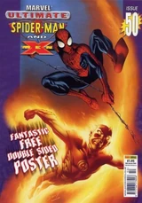 | |
| Ultimate Spider-Man and X-Men #51 | 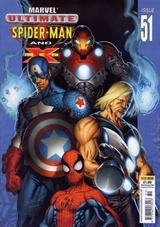 | |
| Ultimate Spider-Man and X-Men #52 | 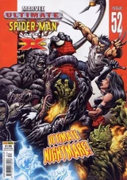 | |
| Ultimate Spider-Man and X-Men #53 | 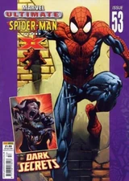 | |
| Ultimate Spider-Man and X-Men #54 | 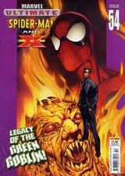 | |
| Ultimate Spider-Man and X-Men #55 | 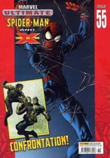 | |
| Ultimate Spider-Man and X-Men #56 | 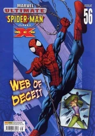 | |
| Ultimate Spider-Man and X-Men #57 | 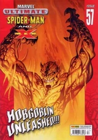 | |
| Ultimate Spider-Man and X-Men #58 | 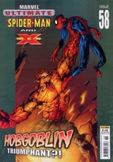 | |
| Ultimate Spider-Man and X-Men #59 | 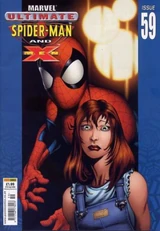 | |
| Ultimate Spider-Man and X-Men #60 | 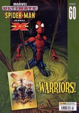 | |
| Ultimate Spider-Man and X-Men #61 | 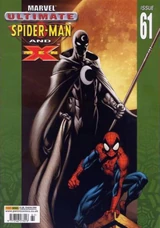 | |
| Ultimate Spider-Man and X-Men #62 | 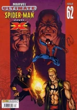 | |
| Ultimate Spider-Man and X-Men #63 | 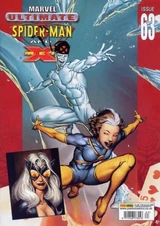 | |
| Ultimate Spider-Man and X-Men #64 | 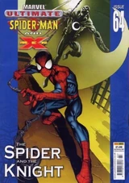 | |
| Ultimate Spider-Man and X-Men #65 | 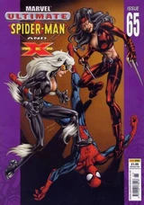 | |
| Ultimate Spider-Man and X-Men #66 | 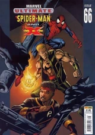 | |
| Ultimate Spider-Man and X-Men #67 | 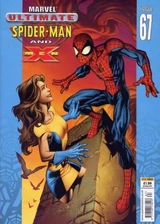 | |
| Ultimate Spider-Man and X-Men #68 | 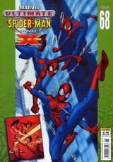 | |
| Ultimate Spider-Man and X-Men #69 | 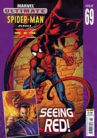 | |
| Ultimate Spider-Man and X-Men #70 | 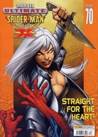 | |
| Ultimate Spider-Man and X-Men #71 | ||
| Ultimate Spider-Man and X-Men #72 | 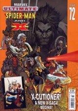 | |
| Ultimate Spider-Man and X-Men #73 | 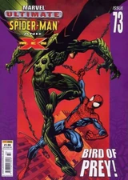 | |
| Ultimate Spider-Man and X-Men #74 | 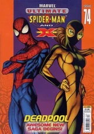 | |
| Ultimate Spider-Man and X-Men #75 | 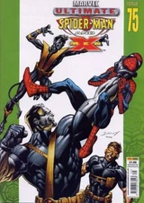 | |
| Ultimate Spider-Man and X-Men #76 | 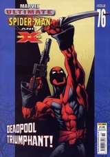 | |
| Ultimate Spider-Man and X-Men #77 | 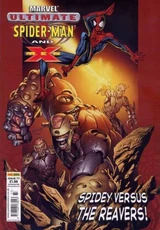 | |
| Ultimate Spider-Man and X-Men #78 | ||
| Ultimate Spider-Man and X-Men #79 | ||
| Ultimate Spider-Man and X-Men #80 | 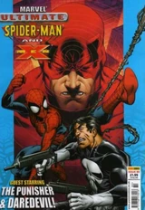 | |
| Ultimate Spider-Man and X-Men #81 | 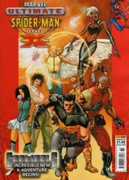 | |
| Ultimate Spider-Man and X-Men #82 | 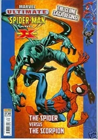 | |
| Ultimate Spider-Man and X-Men #83 | 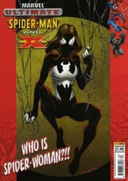 | |
| Ultimate Spider-Man and X-Men #84 | 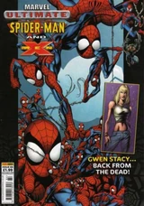 | |
| Ultimate Spider-Man and X-Men #85 | No cover | |
| Ultimate Spider-Man and X-Men #86 | No cover | |
| Ultimate Spider-Man and X-Men #87 | No cover | |
| Ultimate Spider-Man and X-Men #88 | No cover | |
| Ultimate Spider-Man and X-Men #89 | 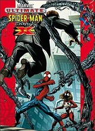 | |
| Ultimate Spider-Man and X-Men #90 | 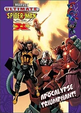 |